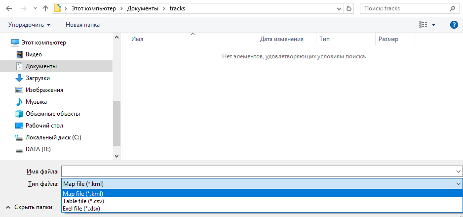

1. System requirements
| 1 | Operating system | Windows 8.1 32/64 Bit, Windows 8 32/64 Bit, Windows 7 32/64 Bit, Windows Vista 32/64 Bit, Windows 10 32/64 Bit |
|---|---|---|
| 2 | CPU | Intel Core 2 Duo or Phenom II x4/x6 and higher |
| 3 | RAM | 2 GB |
| 4 | Hard disk space | 250 MB |
2. Program Description
This program is designed to read saved points from AP-019 devices (except AP-019.1, AP-019.3, AP-019.4), display they are on the map, editing the relationship between points (building a track), saving the track in database, as well as in KML, CSV, XLSX formats. All the read points are saved to the database. The database is stored in a folder with an executable exe file. The database name is "Record.sqlite".
3. Usage
3.1 Program interface
The main interface of the program consists of the following elements:
- The toolbar provides quick access to frequently used
tools and consists of the following buttons:
- Hide points from map
- Delete points
- Save track
- Export selected points
- Help
- Internet access status:
- Access to internet is present
- No access to internet
- The data table displays the saved points as a table. Points you can select with the mouse and keyboard and perform operations with them from the panel tools
- The filter panel is used to search for points using filters.
- The map serves as an interactive element for working with selected points.
3.2 Connecting AP-19.4
When the AP-019 tracer is connected for the first time, a window opens in which you need to set device name. The selected name will be displayed together with the number in the list of devices in the "Filter Panel". The device name can also be changed as follows:
- Connect the device
- Click on the status button in the toolbar
- Click
 (enter edit mode)
(enter edit mode)
- Enter a new device name in the name line
- Click (if the frame is red, then such a name exists, enter a new name)
3.3 Viewing points
- In the "Filter Panel", select the device you need and the time for removing points.
- Also in the "Filter Panel" you can choose a convenient data filter:
- By frequency
- By external sensor
- By country
- By city
- Down the street
- By saved tracks
- After selecting the necessary filter, click
The removed ones will appear in the table points, and if there is internet access, it will display track on the map.
- By double-clicking on a point on the map, its parameters will appear.
- To view the map in full-screen mode, click which hides the table.
3.4 Interaction with the data table
Using the data table, you can select points to highlight them on the map or perform action using the toolbar.
Selection of points:
- You can select or deselect one point using the left mouse button.
- You can select or deselect several points by pressing CTRL + LMB on the desired points.
- Selecting or deselecting several consecutive points is carried out by selecting the starting point and by pressing SHIFT + LMB on the endpoint.
Actions with dots:
- To hide the selected points from the map and data table, use the button
- To delete a point from the database, use the button
- To add a new track, click and enter the track name.
3.5 Interaction with the map
- Moving around the map takes place using the LMB and moving the mouse in the opposite direction to the desired direction.
- The map scale is changed by the mouse wheel. The angle of the map is changed using CTRL + mouse wheel.
- The map is rotated using SHIFT + mouse wheel.
- Selecting and deselecting a point on the map is done by pressing the LMB on the desired point.
- Viewing measurements at a point on the map takes place by double-clicking on the desired point.
3.6 Saving a track
You can save the track in KML, in XLSX, in CSV format.
To save to a file, select the desired points and click
Next, select the format in which you want to save:

3.7 Viewing a track on an Android device
Using an Android device, you can determine the location of communication with accuracy up to 15 meters.- Save the track in KML format.
- Download the GPX Viewer app to your android device, and also transfer the saved KML file to your android device.
- Open the KML file using the GPX Viewer application.
4. About us
The TECHNO-AS Group of Companies has been in existence since 1992. Having once started with the production of pyrometers, contact thermometers and tracerouting receivers, we continue to this day develop new devices that meet all international requirements. Over its long history, our products have been awarded almost four hundred different awards and titles.
Today, TECHNO-AS is a group of companies that develops, production and sale of various non-destructive testing devices. The main the areas of work of "TECHNO-AS" is the production of tracerouting equipment, temperature and humidity measuring devices, as well as the production of electrical autolab.
Our specialists have developed a multi-level quality control system for the manufactured products that exclude marriage. Additionally, quality control is carried out by introduction of the concept of lean production. We are exporters of our own products abroad. Our devices have already been successfully they work in 21 countries of the world.
Our distributors throughout Russia are always ready to help with the choice of the device, to conduct training and provide full warranty service for all buyers of TECHNO-AS devices. Products manufactured by the TECHNO-AS group of companies: Temperature meters and recorders, Cable detectors, Contact thermometers, Thermal imaging systems,Leak detectors , Tracers, tracers, Electrical auto laboratories. Our devices are certified for use not only in Russia, but also in all countries Customs Union of the EAEU.
You can see the full list of certificates for our equipment in the corresponding section.
Contacts:
-
ntc@technoac.com
-
+7 (495) 258-86-46